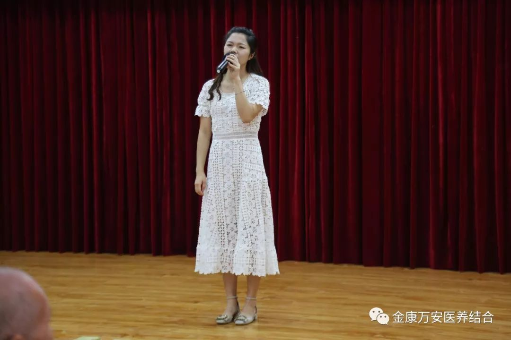
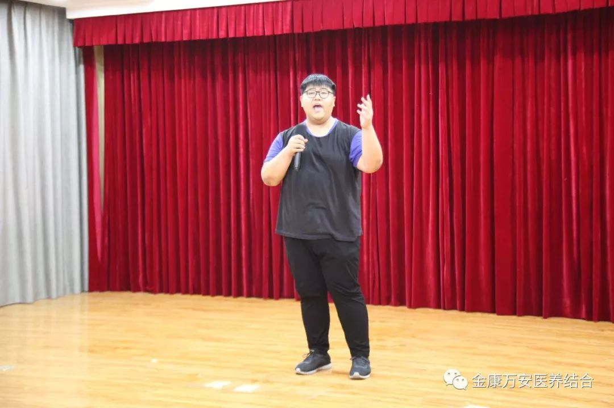

万安医院新闻
“情系端午 爱在万安”万安医院2018端午节联谊会成功举办
人气: "" 时间：2018-06-14
端午节是我国的传统节日，值得我们纪念。2018年6月14日下午，万安医院、万安老年公寓为和入住老人共享天伦之乐，展现我院孝慈仁善企业文化，举办了“情系端午 爱在万安”万安医院2018端午节联谊会，现场氛围浓烈。
下午三点，文艺表演正式开始，由员工自编自演为大家带来了精彩的戏曲、舞蹈、歌曲等节目，节目中既有老年人喜欢的豫剧，也有现下流行的《肚皮舞》、《摇咧摇》等舞蹈；老人们都被这欢乐的气氛所感染了，有些老人上台表演了革命老歌曲、诗词朗诵等节目，博得全场一片喝彩。
由刘院长和康复科贺玲与徐金平共同表演的舞蹈《天竺少女》
体检科曾丹丹演唱歌曲《梨花又开放》
万安居家养老服务中心主任焦富鸿演唱戏曲《想起来当年征渭南》
后勤科张利杰演唱的歌曲《当那一天来临》
收费室赵双黎、药房张二妞共同朗诵的《满江红》
内一科王之夏为大家演唱歌曲《原来你也在这里》
内二科护士长裴丽娜表演舞蹈《茉莉花开》
放射科李浩成演唱歌曲《情怨》
康复科三位美女贺玲、徐金平和王四杰表演的舞蹈《摇咧摇》
王奶奶为大家演唱歌曲《北京的金山上》
刘奶奶为大家朗诵顺口溜《健康养生三宝》

护理员许阿姨为大家演唱戏曲《大祭桩》
后勤杨院长为大家演唱《母亲》
刘院长演唱的歌曲《青藏高原》
李奶奶演唱歌曲《沂蒙山小调》
吴奶奶诗朗诵《乡愁》
周大爷为大家展示自己画的“狗年大吉”
联谊会在《歌唱祖国》大合唱中落下了帷幕。整场联谊会掌声、欢笑声此起彼伏，不仅展现出我院深厚的文化艺术底蕴和职工良好的精神风貌，同时也体现出我院入住老人多才多艺。祝愿老人们能够在温暖中度过一个美满幸福的端午节！